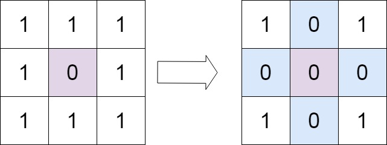
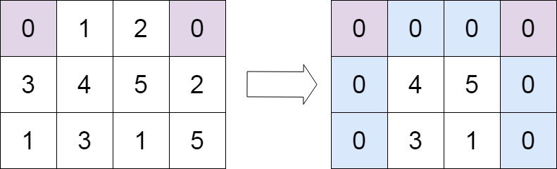

题面
给定一个 m x n 的矩阵，如果一个元素为 0 ，则将其所在行和列的所有元素都设为 0 。请使用 原地 算法。
示例 1：

输入： matrix = [[1,1,1],[1,0,1],[1,1,1]]
输出：[[1,0,1],[0,0,0],[1,0,1]]示例 2：

输入： matrix = [[0,1,2,0],[3,4,5,2],[1,3,1,5]]
输出：[[0,0,0,0],[0,4,5,0],[0,3,1,0]]提示：
m == matrix.lengthn == matrix[0].length1 <= m, n <= 200-231 <= matrix[i][j] <= 231 - 1
进阶：
- 一个直观的解决方案是使用
O(m n)的额外空间，但这并不是一个好的解决方案。 - 一个简单的改进方案是使用
O(m + n)的额外空间，但这仍然不是最好的解决方案。 - 你能想出一个仅使用常量空间的解决方案吗？
解法一 O m 加 n 额外空间
思路
- 先标记，再置零：
- 第一遍扫描：记录哪些行、哪些列包含 0
- 第二遍扫描：只要当前元素所在的行或列被标记过，就置零
- Python 技巧：
[0 in row for row in matrix]：列表推导式，对每一行检查是否包含 0，得到布尔列表zip(*matrix)：转置矩阵（把行变成列），*matrix解包所有行，zip按相同位置配对，得到每一列的元组- 两者结合，一行代码就能得到行/列的零标记
- 易错点：
- 列表推导式里不需要 `if`：
[0 in row for row in matrix]而非[if 0 in row for row in matrix]，0 in row本身就是布尔表达式 - 置零时要加条件判断：
if zero_row[i] or zero_col[j]才置零，不能无条件把所有元素都置零
代码实现
class Solution:
def setZeroes(self, matrix: List[List[int]]) -> None:
zero_row = [0 in raw for raw in matrix]
zero_col = [0 in col for col in zip(*matrix)]
# first_col_has_zero = any(row[0] == 0 for row in matrix) # 记录第一列是否包含 0
for i in range(len(matrix)):
for j in range(len(matrix[0])):
if zero_row[i] or zero_col[j]:
matrix[i][j] = 0- 复杂度：时间 O(m × n)，空间 O(m + n)（存储行列标记）
解法二 O 1 额外空间
思路
- 核心思想：用矩阵的第一行和第一列本身作为标记数组，替代解法一中额外的
zero_row和zero_col matrix[0][j] == 0表示第j列需要置零matrix[i][0] == 0表示第i行需要置零- 但第一行和第一列自身是否要置零，会被标记过程覆盖，所以要先单独记录
- 四步走：
- 预存：记录第一行、第一列本身是否含 0（
first_row_zero、first_col_zero） - 标记：扫描内部区域（
range(1,m)×range(1,n)），遇到 0 就在对应的第一行/第一列打标记 - 置零内部：再扫描内部区域，根据第一行/第一列的标记置零
- 置零边界：根据预存的标志，单独处理第一行和第一列
- 为什么循环从 `range(1, m)` / `range(1, n)` 开始？
- 第一行和第一列被征用为标记数组，它们的值在标记阶段会被改写
- 如果标记时也扫描第一行/第一列（从 0 开始），第一行/第一列中原本的 0 会把标记"污染"——本来只有第一行/第一列自己该置零，却会错误地让其他行/列也置零
- 所以标记和置零内部都必须跳过第一行和第一列（从 1 开始），第一行/第一列由
first_row_zero和first_col_zero单独处理 - 易错点：
- `first_row_zero` 和 `first_col_zero` 必须在标记之前记录：标记阶段会修改第一行/第一列的值，之后就分不清哪些 0 是原有的、哪些是标记写入的
- 最后置零边界时，行和列别搞反：
first_row_zero要置零第一行（matrix[0][col]），first_col_zero要置零第一列（matrix[row][0]）。变量名和索引位置要对应，很容易写反 - `first_col_zero` 不能直接 `0 in zip(*matrix)[0]`：
zip()返回的是迭代器，不支持下标访问，需要先list()转换：0 in list(zip(*matrix))[0]
代码实现
class Solution:
def setZeroes(self, matrix: List[List[int]]) -> None:
m, n = len(matrix), len(matrix[0])
first_row_zero = 0 in matrix[0]
first_col_zero = 0 in list(zip(*matrix))[0]
for i in range(1, m):
for j in range(1, n):
if matrix[i][j] == 0:
matrix[0][j] = 0
matrix[i][0] = 0
for i in range(1, m):
for j in range(1, n):
if matrix[0][j] == 0 or matrix[i][0] == 0:
matrix[i][j] = 0
if first_row_zero:
for col in range(n):
matrix[0][col] = 0
if first_col_zero:
for row in range(m):
matrix[row][0] = 0- 复杂度：时间 O(m × n)，空间 O(1)（只用了两个布尔变量）